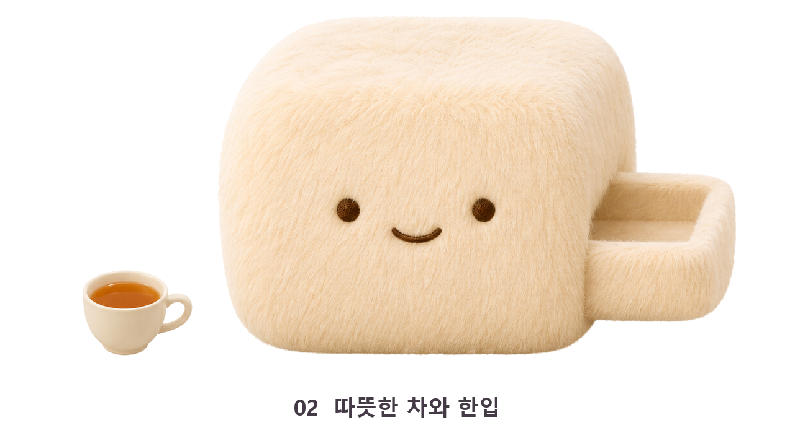
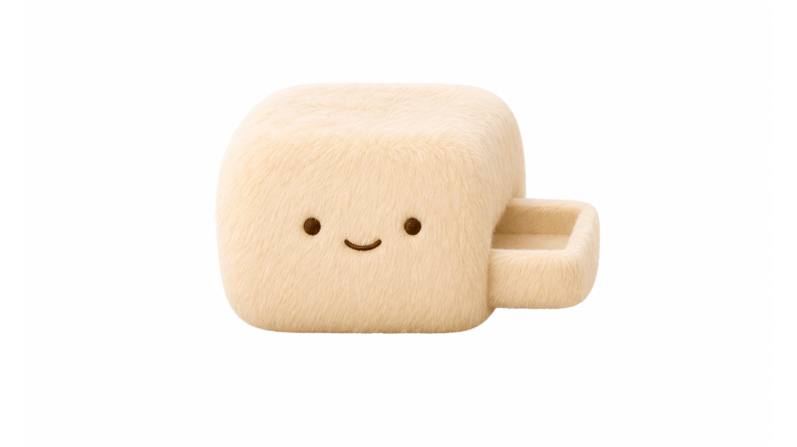

01 / 추천 한입
따뜻한 쉼표
따뜻한 차 · 버터 쿠키
컵이 식기 전까지만, 오늘 생각은 잠깐 내려놓아요.

01 · 기분 서랍
지금 마음에 가까운 서랍을 열어보세요.

따뜻한 차 · 버터 쿠키
컵이 식기 전까지만, 오늘 생각은 잠깐 내려놓아요.
02 · 서랍지기 소개
포근한 털과 작은 서랍을 가진 내편한입의 친구예요. 오늘도 서랍 한 칸에 간식을 챙겨두고 기다리고 있어요.
“오늘도 수고했어요. 한입 할래요?”
03 · 영상 모아보기
우리가 만든 영상으로 내편한입과 한칸이를 만나보세요.